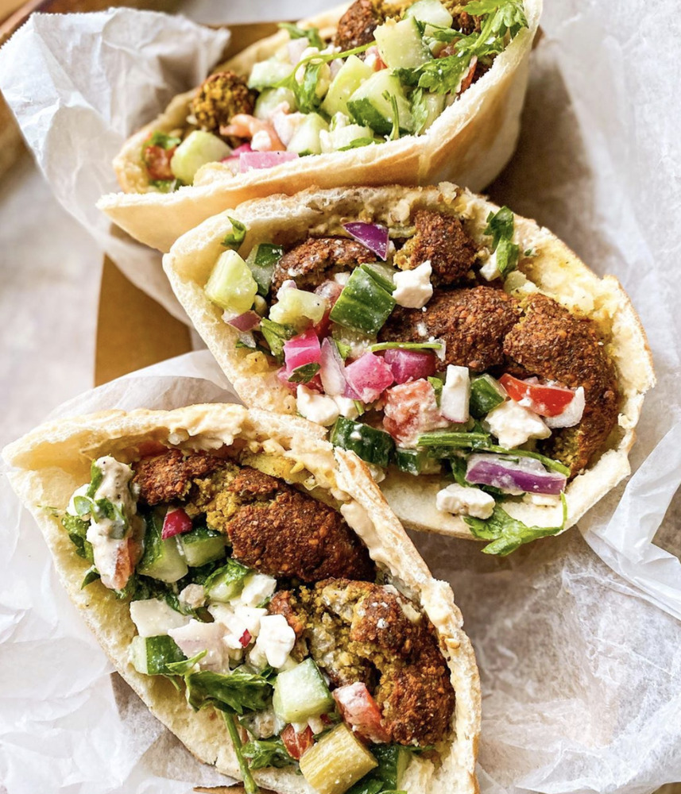

Falafel

Description
Er is niks beter dan een pita die vers uit de oven komt met een dikke laag
hummus en amba waarin dan enkele falafels gedropt worden. De droommaaltijd
van elke zelfrespecterende vegetariër.
- Bloem
- Zout
- Olijfolie
- Gist
- Ui
- Look
- Kikkererwten
- Verse kruiden
- Specerijen
- Nog meer kikkererwten
- Tahini
- Citroensap
- Zout
- Peper
Steps
-
Maak het deeg voor de pita's. Mix bloem, gist, olijfolie, zout en water
in een kom tot een shaggy deeg. Zet minstens 1u opzij om te rijzen.
-
Maak tijdens dat het deeg rust, de basis van de falafel. Mix de ui,
kruiden, specerijen en geweekte kikkererwten in een blender. Zet dit
minstens een uur in de koelkast.
-
Maak nu de hummus. Combineer gekookte kikkererwten, tahini, citroen en
water in blender. Mix mix mix en een prachtige bruine smurrie will
appear. Zout en peper zijn essentiële smaakmakers voor de afwerking.
-
Rol de pita's uit en verhit olijfolie in de pan waarin je het
falafeldeeg in bolletjes bakt. Bak de pita's in een foorhete oven.